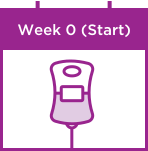
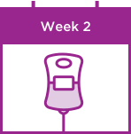
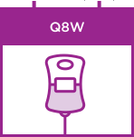

For U.S. Healthcare Professionals
Dosing
Consistent &

For adult patients with moderately to severely active UC or CD when other therapies have not worked well enough or cannot be tolerated.
SIMPLE DOSING FOR YOUR PATIENTS WITH UC OR CD1
Entyvio offers your patients consistent, predictable dosing1
STARTING & MAINTAINING TREATMENT
HOW TO START
Start with infusions at Weeks 0, 2, and 6


HOW TO MAINTAIN
Continue every 8 weeks thereafter
Discontinue therapy in patients who show no
evidence of therapeutic benefit by Week 14
After 1 year, a patient will receive 6 maintenance doses per year, with a total annual infusion time of approximately 3 hours.1
DOSING & ADMINISTRATION INFORMATION
ADMINISTRATION
- Administered as a 300 mg flat dose over an approximately 30‑minute IV infusion1
- A total of 6 maintenance doses annually after the first year1
- Do not administer as an IV push or bolus
MONITORING
- Entyvio IV should be administered by a healthcare professional prepared to manage hypersensitivity reactions, including anaphylaxis, if they occur. Appropriate monitoring and medical support measures should be available for immediate use. Observe patients during infusion and until the infusion is complete1
CONCOMITANT THERAPIES
- Entyvio can be administered concomitantly with aminosalicylates, steroids, or immunomodulators1
PRIOR TO ADMINISTRATION
- Patients should be brought up to date with all immunizations prior to starting Entyvio1
For complete dosage and administration information, please see full Prescribing Information.
DOSING & ADMINISTRATION VIDEO
For demonstrative purposes only.
Please see full Prescribing Information for complete reconstitution and dilution instructions.
Get your patients started with
EntyvioConnect
Find helpful resources
for your practice & your patients
Reference:
- Entyvio (vedolizumab) prescribing information. Takeda Pharmaceuticals.